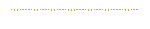

Frequency Analysis
Frequency analysis identifies patterns in letter frequencies within ciphertext to exploit known language characteristics, aiding in breaking substitution ciphers. It matches these frequencies to typical letter distributions of the target language. This method is less effective against modern ciphers that disguise such patterns.